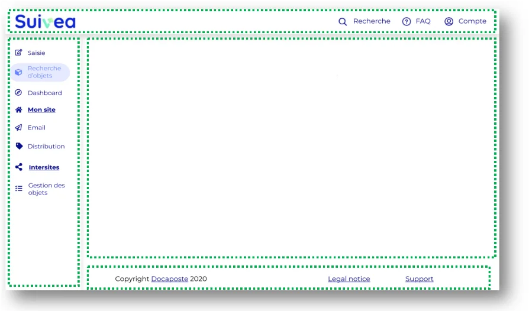
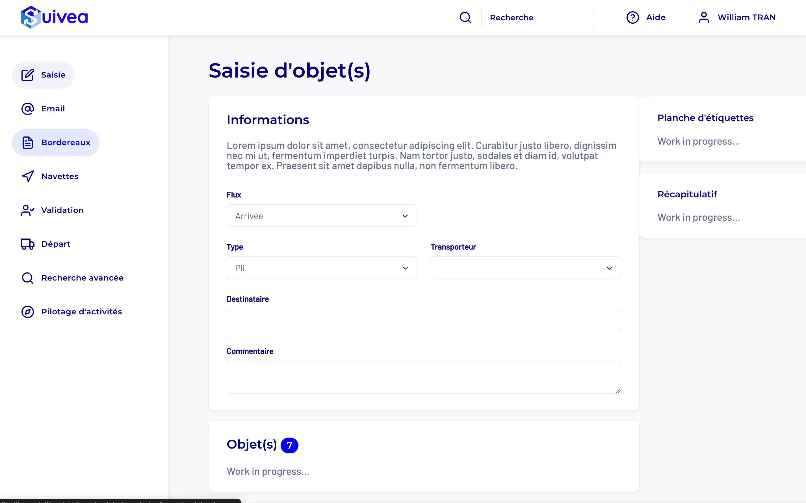

Suivea v3 development
Turning validated Suivea v3 mockups into integrated web screens, with a reusable component base meant to support future product iterations.
Integrated screens shown in French. No English UI version yet.
Project summary
Following the visual redesign of Suivea, I took part in the front-end integration of a new version of the product during my internship at Docaposte. The work was not just about reproducing a mockup, but about turning a validated UI direction into web screens that were coherent, usable and maintainable.
The challenge was twofold: deliver screens that were faithful to the approved mockups, while also building a reusable base of components and UI rules for the next development steps.
Problem to solve
The team had more mature visual mockups, but they still had to be translated into web screens that were truly integration-ready, with components stable enough to be reused afterward. Without a shared base, every new screen risked introducing spacing, hierarchy or behavior inconsistencies.
The project therefore came down to solving a concrete problem: integrate a first screen faithfully, then reuse that base on the following ones without having to re-tune every component by hand.
Technical goal
- Create a reference base for recurrent styles and components
- Integrate a Suivea v3 screen faithful to the approved mockups
- Reduce visual drift between screens and interface states
- Prepare a more reusable structure for future integrations
What I built
I first contributed to a foundation page gathering the styles and components useful to the project, and then we integrated Suivea v3 screens in pair work on top of that base.
- HTML structuring of business-oriented blocks with clear reading and maintenance hierarchy
- Reusable styles for buttons, inputs, cards, spacing and grids
- Fine adjustments of typography, margins, alignment and visual density to match the mockups
- Consistency checks across screens, variants and interface states before validation

Pair-work organization
The work was split into clear batches such as structure, components, integration and feedback, with regular check-ins to align the final result. This helped avoid style divergence, distribute the work cleanly and fix inconsistencies quickly.
Integration difficulties
- Translate the mockup precisely into code without losing its intended visual hierarchy
- Avoid variation from one screen to another on recurring components
- Balance visual fidelity, time constraints and the level of finish that could realistically be reached
A substantial part of the work consisted of correcting differences that look minor in isolation but quickly damage the overall perception of an interface: inconsistent margins, imperfect alignment, text sizes that are too close, or components that feel almost identical but not quite.
Results
- Component base structured enough to support the following screens
- Suivea v3 screen integrated faithfully and validated internally
- Better visual consistency across product blocks and interface states
- Stronger rigor in UI integration within a professional and collaborative environment
What this project helped me develop
- Ability to turn a graphic intention into a usable web interface
- Real attention to the implementation details that shape perceived product quality
- Pair work with continuous alignment on a shared result
- A structuring mindset that avoids producing throwaway code screen by screen
